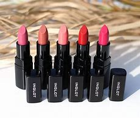
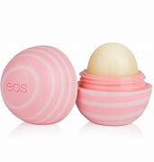
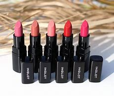
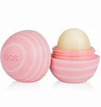

Lipstick

Lipstick
Lipstick is a cosmetic product used to apply coloration and texture to lips, often made of wax and oil. Differentpigments are used to produce color, and minerals such as silica may be used to provide texture. The use of lipstick dates back to early civilizaitions such as Sumer was popularized in the Western world in the 16th century. Some lipsticks contain traces of toxic materials, such as lead and PFAS, which prompted health concerns and regulation.
Available Forms
Cream Lipstick : R129.00
MATTE Lipstick : R200.00
Lipbalm : R89.99

 




Storck Availability
354 Available